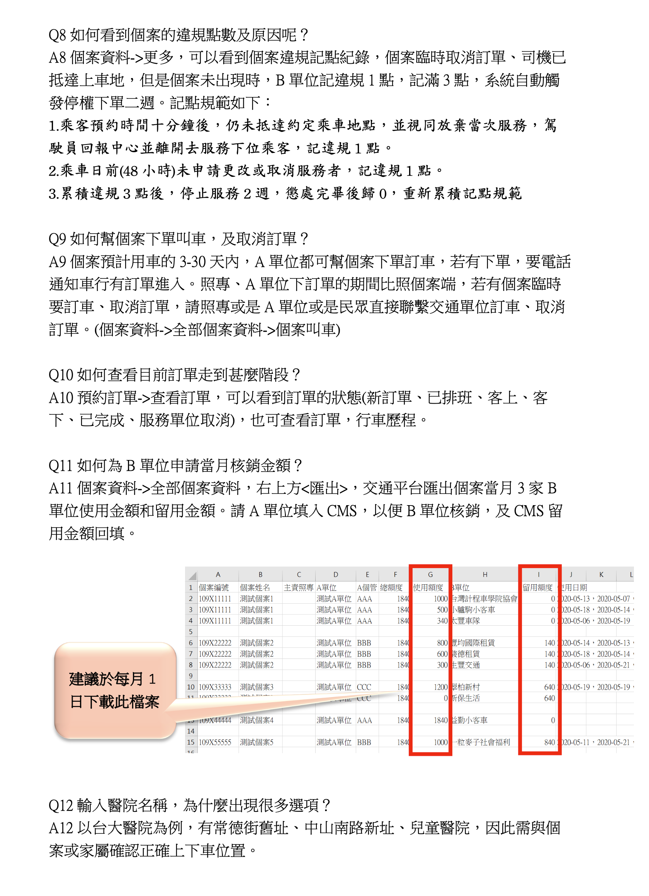

常見問題
Q1.新進司機如何進行線上教育訓練?
A1.
一、操作流程: 開啟中華開放教育平台系統網址(https://www.openedu.tw/)，司機先完成註冊（建議用臉書），回報教育訓練名單以便本局統計受訓完成駕駛(會於本市交通平台系統顯示受訓徽章)，進行線上影片教學課程觀看並完成測驗即可(測驗到80分以上及格)。
二、教育訓練課程：
1.新型冠狀肺炎防疫宣導系列
2.無障礙接送幸福快樂城市認識可能服務到的弱勢族群。認識輔具的使用方式與相關的急救常識。
3.銀髮交通接送服務認識可能服務到的銀髮族群。具備載乘客時所需要的急救常識，及協助就醫之流程。
三、教學簡報檔案：https://reurl.cc/bz9KVE
四、完成後司機填寫表單：https://reurl.cc/jqDKGp
五、有關課程的問題，可撥電至04-24517250#6866 蔡先生。
六、交通平台廠商將於每日下午4點更新司機通過名單https://docs.google.com/spreadsheets/d/1W52YnR6R0GZbaIVNnrKuo0TLDeYZeqo11lh5-3pNGuc/edit?usp=sharing，交通單位可於司機完成線上課程後2天查看通過狀況，名單若有問題可撥電至02-89532910 呂小姐。
一、操作流程: 開啟中華開放教育平台系統網址(https://www.openedu.tw/)，司機先完成註冊（建議用臉書），回報教育訓練名單以便本局統計受訓完成駕駛(會於本市交通平台系統顯示受訓徽章)，進行線上影片教學課程觀看並完成測驗即可(測驗到80分以上及格)。
二、教育訓練課程：
1.新型冠狀肺炎防疫宣導系列
2.無障礙接送幸福快樂城市認識可能服務到的弱勢族群。認識輔具的使用方式與相關的急救常識。
3.銀髮交通接送服務認識可能服務到的銀髮族群。具備載乘客時所需要的急救常識，及協助就醫之流程。
三、教學簡報檔案：https://reurl.cc/bz9KVE
四、完成後司機填寫表單：https://reurl.cc/jqDKGp
五、有關課程的問題，可撥電至04-24517250#6866 蔡先生。
六、交通平台廠商將於每日下午4點更新司機通過名單https://docs.google.com/spreadsheets/d/1W52YnR6R0GZbaIVNnrKuo0TLDeYZeqo11lh5-3pNGuc/edit?usp=sharing，交通單位可於司機完成線上課程後2天查看通過狀況，名單若有問題可撥電至02-89532910 呂小姐。
Q2.查無個案資料無法下訂單，怎麼辦?
A2.交通平台系統目前無法與衛福部CMS系統介接，以人工半自動方式將個案清冊下載後匯入交通平台系統，故有1~1.5天的時間差。若查無個案資料，可聯絡個管師於交通平台手動新增個案資料。
Q3.訂單無顯示價錢，或預約後顯示去程、或回程地址錯誤，怎麼辦?
A3.請先檢查預約訂車之起迄點是否為完整地址google
map可以定位到的地址(可將地址轉換到google
map，確認是否定位的出該地址)，若google
map搜尋不到個案居住地址導致無法定位，可將座標輸入於個案資料編輯內緯經度的欄位。
Q4.輸入醫院名稱，為什麼出現很多選項?
A4.以台大醫院為例，有常德街舊址、中山南路新址、兒童醫院，因此需與個案或家屬確認正確上下車位置。
Q5.共乘定義?共乘價格如何計算?
A5.實際有二組長照個案在車上，若有一組個案臨時取消預約服務，另一組個案無共乘折扣，依據原本報價收費。臨時取消服務者記違規1點做懲處。
雙方共乘車資總價都*66%，再與個案個別收取自負額，陪同者另行計價。
Q6.司機打卡後，還能推播新訂單嗎?哪裡可以看明天的任務?
A6.可以。「今日任務」：當天所有接送任務、「任務歷程」：可依日期查看所有接送任務。
Q7.系統裡建置的司機和車輛資料，只可新增但無法刪除？
A7.請建置衛生局核備合格的司機和車輛資料，以利衛生局行政人員稽核。
Q8.因勞基法規定工時，故可能有多位司機開一部車情況，如何將訂單改換司機?
A8.單筆訂單欲更換司機：於調度控制台中找到該筆訂單，點擊右鍵即可更換駕駛（不換車）。
當天所有訂單欲更換司機：可於司機車輛設定-車輛資料中，直接更換該車駕駛
當天所有訂單欲更換司機：可於司機車輛設定-車輛資料中，直接更換該車駕駛
Q9.司機如何下載及安裝司機端APP?
A9.
-
Android手機安裝步驟：
- 1. Android手機請直接點選營運端上方google play圖示，即可下載apk檔進行安裝。
-
ios手機安裝步驟：
- 1. 將手機連接至電腦後開啟iTunes應用程式
-
2. 點選手機icon
-
3. 在「序號」的欄位點一下
-
4. 在「UDID」的欄位點擊右鍵拷貝，即可複製UDID
- 5. 填寫表單申請後，相關負責人員將提供ipa檔
-
6. 電腦下載itools3，即可安裝ipa檔
Q10.司機變更手機號碼，司機端APP的帳號卻沒有跟著改變?
A10.首次登錄之手機號碼及為司機端APP帳號，帳號產生後便不會改變，若有特殊原因須更改帳號，請向衛生局申請變更帳號需求單，並註明變更原因。
Q11.如何進行每月車資核銷?
A11.從個案資料裡的全部個案資料，右上角有匯出Excel鍵，可批次上傳至衛福部CMS系統核銷(QD-107新制服務區->110-服務紀錄匯入->上傳交通平台系統所匯出的報表)。
Q12.司機直接送任務時沒網路訊號，不能操作APP怎麼辦?
A12.每日出勤前可先列印車輛使用證明單或任務明細檔供司機備用，等網路有訊號後再將接送任務按完，營運端可於預約訂單之行車歷程中補登時間
A單位教學手冊下載 